局部解析逆因子优于学习因子对照，但尚未达到参考精度
11条已打开训练轨迹，各取0/50/100帧、5/7/9相机，共99个样本。36/36独立核验通过，33/33采样绝对精度分层通过，但四项同时匹配CGLS128为0/99。两套实现最终场最大相对差7.08e-15。这不是完整序列或新工况测试。
保持已核验的32强相关射线邻接规则不变，通过局部条件方程构造稀疏逆因子，再经精确AT提升和原CGLS34精修。它是已有FSAI思路的固定支持测试，不是新学习算法，也不是完整adaptive FSAI复现。构建不读观测、真值或参考，不建立完整大因子；优化的是固定支持下的矩阵条件目标，不是精修后重建误差的全局最优。
相对之前学习因子，77/99样本四项误差都更低；但相对CGLS35，没有样本四项都改善，72/99四项都更差。场、全梯度、内部梯度、观测的误差中位数比例为1.00665、1.01135、1.00372、1.02550。仅替换这张邻接图上的系数没有带来足够收益，下一表示需检验更远的耦合；这不是所有稀疏逆方法的能力上界。
每查询35A+35AT，另计两次稀疏因子乘法；三套几何共48,614个局部Gram构建和求解，因子及转置载荷合计17.21MiB。载荷不是进程RSS，历史几何/邻接构建和物理审计也非免费。关闭本固定解析逆因子与Warm34配方；没有新部署时间/RSS、外部或真实BOST结论。
探测器频带初值没有达到高精度参考
11条已打开训练轨迹，各取0/50/100帧、5/7/9相机，共99个样本。34/34独立核验通过；固定九方向初值加CGLS34，33/33采样绝对精度分层通过，但四项同时匹配CGLS128为0/99。不是完整序列或新工况测试。
每相机保留二维位移正负相位，做固定八频带逆径向滤波，加BP方向，经精确AT提升。方向只读观测与报告几何；容量系数读取本样本CGLS128参考，选择最小初始场误差，尚未训练或预测。实际网格九方向均非空、秩为9；这不是对精修后所有系数的最优搜索。
相对同预算CGLS35，容量初值的场、全梯度、内部梯度、观测误差中位数比例为1.00088、1.00037、1.00053、1.00549；没有稳定改善。无需参考的整频带最小二乘control在99/99样本四项都更差。保留此前逐射线小幅改善和完整序列经典初值证据。
最终场双实现最大相对差1.40e-14，四指标最大绝对差3.66e-12。主方案每查询35A+35AT，另计FFT、容量方向的9AT、SVD与参考构建；不建立完整大因子。关闭本固定频带、系数选择和Warm34配方，不调频带或加大网络；未做部署时间/RSS、外部或真实BOST验证。
逐射线修正有小幅收益，尚未替代高精度参考
11条已打开训练轨迹，各取0/50/100帧、5/7/9相机，共99个样本。32/32独立核验通过；33/33采样绝对精度分层通过，但四项同时匹配CGLS128为0/99。这里不是完整序列或新工况测试。
按几何确定射线行序，做一次正向和反向残差修正，形成对偶初值；随后精确AT提升，再运行原CGLS32。生成初值不读真值或训练标签，不建立大因子。这是已知行作用方法的固定物理接口测试，不是新学习算法。
相对同预算CGLS35，99个样本四项误差都更低。三维场、全梯度、内部梯度、二维观测的误差中位数比例分别降低0.82%、1.00%、0.74%、7.62%；小幅改善是真实的，但不能代替严格参考匹配。
每查询33A+33AT，另计两次射线扫掠的行运算，合计上界35A+35AT等效量；不能把绕过全矩阵回调的行运算算成免费。独立块Gram、物理核验、评分与历史输入构建另计，未做新进程时间或RSS测速。
独立实现以分块三角方程重建逐行更新，最终场最大相对差1.52e-15，四指标最大绝对差3.66e-12；每套实现另检验33个乱序查询。12相机只做合成接口检查，不扩展为物理泛化结论。
关闭这套固定单次双扫掠与Warm32配方，不追加扫掠次数或事后调深度。保留小幅改善证据与已有完整序列经典初值结果；后续学习表示仍须保住有效物理作用，并与经典对照公平比较。这不是学习、速度或真实BOST突破。
精确带状初值：3,333同精度，时间少5.53%但RSS仍高
11条已打开训练轨迹、全部101帧、5/7/9相机，三组新进程均3,333/3,333四项匹配与33/33完整分层，57/57独立核验通过；没有训练或新数据开封。
时间中位数152.13/161.04秒，三组时间比例0.966/0.943/0.957；峰值RSS为3.678/0.666GiB，比例5.524/6.003/5.831，没有同时赢得时间和内存。因子字节减少45.9%不是整进程RSS胜出；原稀疏计时保留，不作新鲜因果对照。
每查询35A+35AT和一次求解，对照128A+128AT；含因子重建和输出，历史算子/观测生成非免费且不在计时内。下一轮检验无需大因子的逐行射线对偶初值；尚无该机制的科学结果。
观测映射省存储，但精确提升未保住作用精度
直接构建观测到初值的矩形映射，用频率与射线几何分组；三套5/7/9相机、36个合成探针，不读CFD场、实验观测或训练标签。68/68独立核验通过；存储门3/3通过，但精确提升后的作用门0/36，便宜BP对照更好。
表中误差为无量纲初值作用探针相对误差，不是CFD场或最终重建误差。打包系数与索引占完整逆矩阵4.26%/5.14%/6.02%，均低于冻结10%预算；这不是峰值RSS。未经提升的输出也未达到冻结1%门，不能事后替代唯一primary。
| 相机 | 存储占比 | 原映射最坏误差 | 提升后最坏误差 |
|---|---|---|---|
| 5 | 4.26% | 3.713 | 42,747.82 |
| 7 | 5.14% | 4.640 | 56,069.99 |
| 9 | 6.02% | 4.336 | 61,101.10 |
精确经典目标的原始/对偶接口差小于1e-9；但近似输出经残差形式的精确提升后误差被明显放大。每查询1A+1AT仍有表示应用，构建另有48,614个右端列、完整因子和变换；每套实现审计441A+351AT，均非免费。没有运行refinement或新资源测速。
关闭这套固定分组压缩与提升配方，不加秩或挑选未提升结果。下一表示必须直接保住物理作用，而不只优化矩阵压缩率；先盘点合格算子的稀疏结构，确认能否获得更低内存的精确经典对照。之前完整序列经典提速证据不变。
谱块压缩未保住逆作用：改测观测到初值
仅用三套5/7/9相机几何，每套12个固定有效方向探针，不读CFD场或实验观测、不训练。47/47独立核验通过。固定谱块表示占完整逆矩阵存储33.66%，未达到冻结10%预算；这不是峰值RSS。
| 相机 | 逆作用最坏相对误差 | 投影作用最坏相对误差 |
|---|---|---|
| 5 | 1795.82 | 921.11 |
| 7 | 914.36 | 448.23 |
| 9 | 277.67 | 135.78 |
表中是无量纲逆作用探针相对误差，不是CFD场误差或最终重建误差。固定方案比便宜谱对角control更好，但每档最坏误差仍远高于冻结1%门。关闭这套固定压缩，不追加秩或调整参数。
原运行完成数组后因物理回调成本漏入预期账而失效，证据原样保留。结果前冻结的仅账本修正接收完整旧数组、重放物理输出，再由第二实现独立重建；未重复正式逆求解或SVD。
下一重点是观测到初值的有效映射，而不是整个逆矩阵：它不会保留不可观测方向的大逆增益。这个代数区别尚不是误差成因证明或算法收益，需要另做容量与精确提升后的物理匹配。完整序列经典提速结果不变。
完整序列实测：经典初值更快，但内存仍昂贵
保持不训练的DirectRidge-Warm34和CGLS128不变，测试11条已打开训练轨迹的全部101帧、5/7/9相机，共3,333次查询。两方法各三次独立进程，57/57独立核验通过：每组均3,333/3,333四项误差匹配、33/33完整轨迹门通过。三次重复终点逐位一致，再独立重建物理评分与整段尾部。
总时间中位数：经典初值135.99秒，参考161.72秒，三组都更快，约下降16%；峰值推理RSS为5.675对0.668GiB，约8.5倍。三组时间比例0.850/0.841/0.854，RSS比例8.484/8.289/8.586。判决是没有同时赢得时间和内存，不把实际时间收益抹掉，也不包装成学习突破。
计时含新因子建立、物理接口、读入和压缩输出；因子准备约25.00秒。历史算子和观测生成不在计时内且不免费，未清文件缓存。两方法都用八路查询；旧99查询是串行，负结果保留，不能把不同工作量和调度的差异全归因于摊销。这里只是本机固定几何的缓存输入测试。
每查询35A+35AT和一次因子求解，参考128A+128AT。下一算法切入点是替代大因子的构建、存储和三角求解，同时保留四项精度；不能把经典逆算子的贡献算给学习。没有新训练、未见工况、噪声或真实BOST结果。
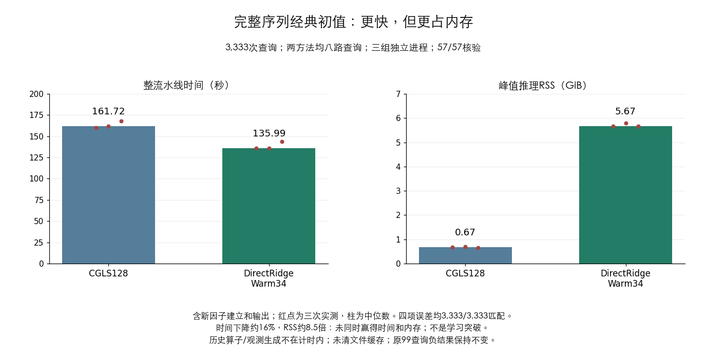
完整时序经典初值通过，学习贡献仍待证明
保持已合格的不训练 DirectRidge-Warm34 初值与未修改CGLS不变，扩展到11条已打开训练轨迹的全部101帧、5/7/9相机：1,111个场、3,333个单元。没有改参数、训练模型、打开新条件或真实实验。
29/29独立核验通过；3,333/3,333单元同时匹配场、全梯度、内部梯度和观测参考误差，33/33完整轨迹分层通过匹配与原绝对门。五/七/九相机场p90为0.39991/0.24265/0.07908，观测p90为0.000577/0.000789/0.000586。判决逐单元、逐完整轨迹进行，不只看相机汇总。
两套实现分别重建全因子与求解递推、物理投影、原场重采样和整段指标；共享CSR、观测、NumPy与调度已披露。场相对差3.40e-11，指标绝对差7.55e-12；原99个初值和终点逐位保留，33个首帧相机乱序检查通过。这里只验证固定原生几何，不是任意机位、噪声或真实BOST。
每查询35A+35AT加一次实际因子求解，参考128A+128AT；全因子构建、存储和求解不免费。原99查询整流水线时间/内存不占优的结论保留，本轮没有新资源测速。现在有完整时序的强经典初值对照；学习必须提供它之外的价值。主目标仍未完成，不是学习算法、资源或论文突破。
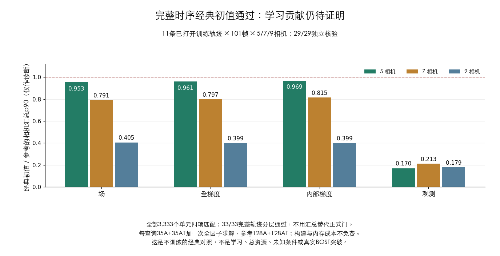
完整时序基线通过，学习加速仍待证明
保持原 CGLS128、物理算子和四项门限不变，检查11条已打开训练轨迹的全部101帧、5/7/9相机，共1,111个三维场、3,333个单元。不是新的学习模型，也没有打开验证、测试、未知几何或真实实验。
25/25独立核验通过：33/33完整轨迹/相机分层通过四项p90绝对门，全部3,333帧单元也逐点守住这些门。最坏单帧场、全梯度、内部梯度、观测误差为0.44601、0.67118、0.62957、0.00405。这是声明的代理门下合格，不代表高精度真实密度测量。
两套求解递推分别重建，第二实现独立重采样原场、物理投影、梯度和整段尾部；共享CSR输入、观测、调度与NumPy库已披露。原99个观测和参考终点逐位保留。Zero和BP均为0/33绝对分层；参考的自匹配不是学习成果。
有限参考每查询128A+128AT，输入生成、几何、存储与评分不免费；审计耗时不是部署速度。这补上完整时序基线资格，不复活旧失败模型，不证明已收敛真解。主目标仍未完成：学习的四项同精度、调用减少、总时间/内存、外部泛化和真实BOST仍未通过。
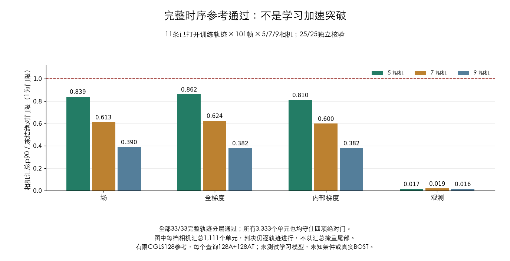
当前观测驱动的小网络：略有改善，仍未同精度
同一11条轨迹、99个三帧训练哨兵、5/7/9相机。28个共享权重读取当前观测、已知几何和物理残差，精确伴随提升后接未修改CGLS；每折只用其余90个样本训练，留出轨迹不进入标签或尺度统计。只验证已知几何，不是完整序列或真实BOST。
38/38独立核验通过，两套实现分别训练、重建和评分。新网络与确定性残差对照均通过33/33绝对分层，却都只有0/99四项联合同精度；网络四个单项也均为0/99。参考和经典全因子初值保持99/99，绝对可用不等于匹配参考。
网络在94/99样本上四项都低于便宜对角初值，但在92/99上四项都高于已有训练式迭代。场误差中位数32.59%，参考26.41%；观测0.01355，参考0.00309。训练损失从1.00000降到0.99258，不是算法成功或表示容量证明。
两种新方法每个查询均35A+35AT；训练、网络计算、教师和几何准备不免费。关闭这一固定点式残差网络，不加宽或加训练轮数挽救。主目标仍未完成：没有四项同精度下的调用、总时间/内存优势，没有完整序列、外部泛化或真实BOST突破。
学习信息进入迭代：场改善，但观测仍未匹配
同一11条轨迹、99个三帧训练哨兵、5/7/9相机。把已封存的训练逆作用用于观测空间预条件迭代，再精确伴随提升与未修改CGLS；没有新拟合，留出轨迹不进入模型。只验证已知几何，不是神经网络、完整序列或真实BOST。
35/35独立检查通过。四个新方法均通过33/33绝对分层，但四项联合同精度仍为0/99。训练方法的场、全梯度、内部梯度、观测单项匹配为71/99、54/99、56/99、0/99。九相机两项梯度均为0/33，不能只看场误差中位数。
训练方法在99/99样本上四项都低于同预算普通、对角和几何迭代。场匹配由上一方案32/99升到71/99；场误差中位数26.05%，参考26.41%。但观测中位数0.01051，参考0.00309，也比上一方案0.00913更差。学习信息有用，当前取舍却未解决联合精度。
每个查询35A+35AT，另有30次预条件作用和小矩阵运算；继承的几何、拟合和昂贵教师不免费。关闭这套固定迭代版本，不改步数、参数或精度门挽救。主目标仍未完成：未证明完整序列、总时间/内存优势、未知条件或真实BOST；这不是算法突破，也不否定全部学习路线。
训练响应带来改善，但小型逆作用仍未达到同精度
同一11条轨迹、99个三帧训练哨兵、5/7/9相机。每折只用其他轨迹的30条逆响应构造共享线性作用，再读取当前观测；几何对照不读训练响应。模型只针对已知几何，不是神经网络或未知位姿验证。
31/31独立检查通过。两个新方法均通过33/33绝对分层，却只有0/99四项联合同精度。训练方法的场、全梯度、内部梯度、观测单项匹配为32/99、19/99、16/99、0/99；经典全因子初值和参考仍为99/99。
训练方法在97/99样本上四项误差都低于几何对照，说明训练响应提供了有用信息；场误差中位数27.79%，几何对照32.63%，参考26.41%。但观测误差中位数0.00913仍高于参考0.00309，便宜改善不等于达标或算法突破。
每个查询35A+35AT，另有小矩阵求解与低秩乘积；几何、训练和昂贵教师不免费，也未测部署速度。关闭当前固定30响应版本，不靠增加方向或调整参数挽救。主目标仍未完成：完整序列、总时间/内存、未知条件和真实BOST尚未证明；这不否定全部逆作用学习或BOST。
35步普通Krylov：只改系数不能补齐观测误差
同一11条轨迹、99个三帧训练哨兵、5/7/9相机。只用当前观测与已知几何生成完整35方向，不读CFD真值、不拟合模型；这不是完整序列、真实BOST或新预测器。
23/23独立检查通过。即使系数取最优，观测匹配仍为0/99，99/99均有数值下界证书；最优观测误差是参考的3.48至5.68倍，中位数4.31倍。普通CGLS35与完整系数最优解的残差差异不超过4.03e-16。
这只限制当前观测的无预条件普通Krylov35空间，不是所有35次调用算法。经典初值、失败学习初值与对角初值在空间外的场范数比例中位数为19.16%/50.22%/22.85%；空间外能量更多不代表方向更有用，也不构成新训练目标。
方向生成每个查询35A+35AT，另有两次A重放；完整重正交、投影求解与基存储不免费，不是速度优势。停止只学习这组标量系数的尝试；其他方向映射仍待检验。主目标仍未完成：四项同精度、总时间/内存、完整序列及外部迁移仍不可由本次审计替代。
2026-10-07：58参数稀疏逆因子未达到同精度
同一11条轨迹、99个三帧训练哨兵、5/7/9相机。58参数只拟合已知几何算子，不读轨迹观测、教师场或CFD真值；不是未知几何或完整序列验证。
30/30独立检查通过，两套实现分别训练和重建。新方法达到33/33绝对分层门，却只有0/99严格同精度；便宜对角初值也是0/99。经典全因子初值和参考保持99/99，不能把两个门混为一谈。
算子拟合损失从0.45186降至0.29883，但最终场误差中位数33.13%，高于便宜对角初值32.63%和参考26.41%；四项误差中位数均高于对角初值。因子及转置共17.21MiB只是表示存储，不是总内存或速度优势。
每个查询35A+35AT，另有两次稀疏三角求解；几何建立与训练不免费。关闭当前固定版本，不靠加邻居、模型宽度或训练轮数挽救。主目标仍未完成；完整序列、学习资源优势、外部泛化与真实BOST仍未证明，也不据此否定全部学习方法。
训练方向缺口，不只是系数预测问题
在同一99个三帧训练哨兵、11条已打开轨迹、5/7/9相机上，每次整条留出一条轨迹，只使用其余十条轨迹的30个同相机基数方向。让离线最优系数读取目标，检验能否重现已验证的经典初值；这不是部署预测器。
16/16独立核验通过。全部99个样本均有下界证书，不能在场、全梯度、内部梯度和物理观测四空间同时达到1%的初值重现误差。主方向库的四项误差中位数为41.16%/55.92%/60.21%/45.95%；反投影和有限CGLS方向对照也均未通过。
新增0A+0AT，没有模型拟合、新CFD真值读取或新标签构造；已有因子、标签和缓存的成本仍保留。两种实现重建导数和最优投影，场最大相对差1.53e-10。离线审计的时间和内存不是部署资源优势。
这个固定方向库不足，不能靠更大的系数预测器解决。它不改变经典重建99/99同精度的证据：初值重现门不是CFD最终误差门，也不否定另一种初值或后续CGLS能修复的方向。下一步应寻找当前观测与几何自身提供的空间方向，不扩充这套库来挽救结果；完整序列、学习加速和真实BOST仍未证明。
少调用未带来总时间和内存优势
11条已打开轨迹、99个三帧训练哨兵、5/7/9相机。经典直接ridge初值与有限CGLS128各执行三次固定交错的新进程；没有新训练、参数搜索或新数据开封。
52/52独立核验通过。全部三组均99/99四指标同精度、33/33基础分层；场、物理观测和误差分别复现两个合格父实现。原查询矩阵和观测保持同一顺序，只有因子构建输入按几何排序。
计入新因子建立，缓存输入总时间中位数由22.88秒升至35.49秒，单推理进程峰值RSS由0.68GiB升至5.61GiB。三组配对总时间均高1.54至1.58倍，内存均高8.24至8.47倍；没有速度或内存优势。
查询和输出阶段从19.54秒降至7.29秒，但因子建立另耗约24.73秒。经典初值为35A+35AT，另加1次因子求解；有限参考为128A+128AT。少调用的收益被建立与存储成本抵消，未来学习替代必须解决这个成本瓶颈，而非仅加系数。
计时包含新进程、几何接口、缓存读取、新因子、查询和输出，不含历史算子与观测生成，未清空系统文件缓存。旧PCGLS性能尝试仍无效，本轮不重新认定它。这里只是本机经典缓存输入比较，不是学习、完整序列、外部或真实BOST成果；主目标仍未完成，私有数据、源码和参数不发布。
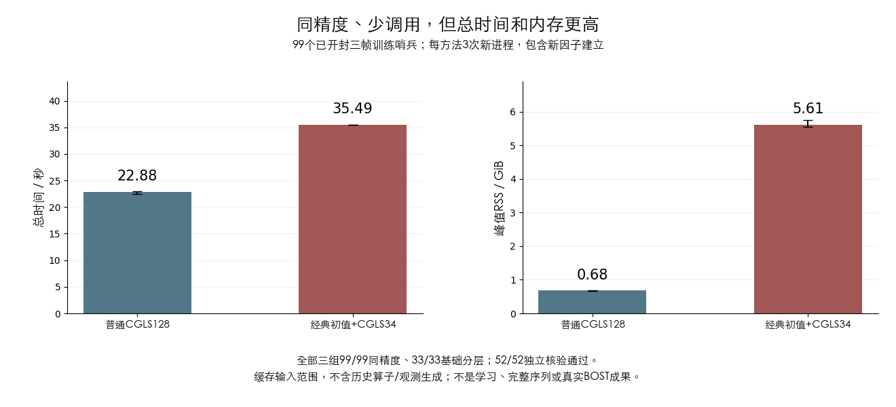
直接ridge初值通过，学习未带来独特优势
当前观测与报告几何生成BP和完整ridge逆作用，两个共享系数只在其他轨迹上拟合，再精确伴随提升并接原样CGLS。11条已打开轨迹、99个三帧训练哨兵、5/7/9相机；整条留出轨迹不进入训练，但这不是完整序列验证。
117/117独立核验通过。学习型混合与不学习的直接ridge初值均99/99四指标同精度、33/33基础分层通过。不学习的同成本对照已解释收益；学习候选在68/99单元的四项误差全部更大，场/观测误差中位比高0.53%/19.20%，没有任何单元四项同时更好。
两种初值均35A+35AT，另加1次因子求解；有限CGLS参考为128A+128AT，原完整因子PCGLS为34A+34AT另加34次求解。因子数组约415至731MiB，法方程矩阵另计；构建、标签、训练和存储不免费。没有速度或内存优势的实测结论，少调用不能自动称为端到端提速。
关闭这条固定两系数混合的独特学习收益主张，不事后调整ridge、损失或细化深度；保留通过的经典初值为对照。这不否定全部学习或BOST，主目标仍未完成：完整序列、总成本、独立外部与真实BOST还未证明。共享规范CSR输入与编排已披露；私有实验数据、源码、协议和参数不发布。
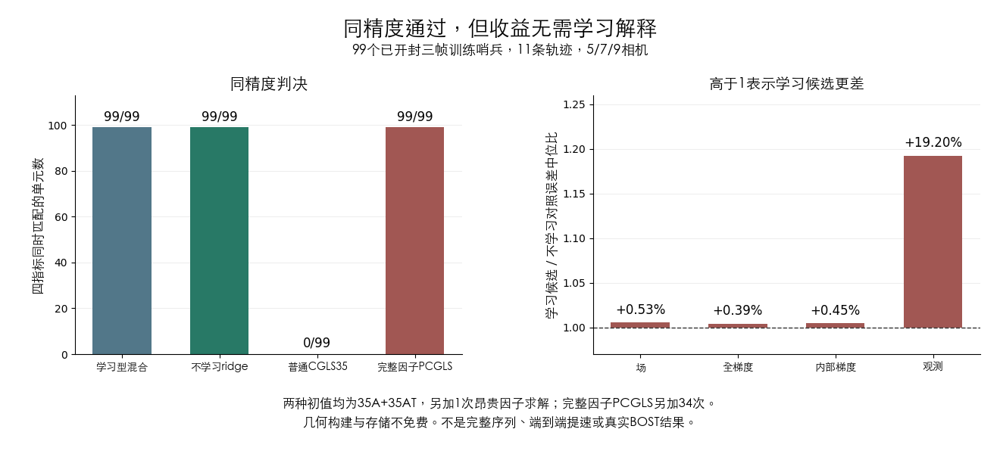
空间势滤波初值仍未达到同精度
候选只处理当前观测的精确反投影，以固定空间势滤波生成方向，再精确提升并接原样CGLS。方向与便宜确定性控制全部先封存，随后才读取有限经典目标做最佳初始场投影。本轮没有训练预测器。
经限定恢复后的14项独立检查与等价性证书通过。同一99个三帧训练哨兵上，见证与便宜控制都通过33/33基础分层，但四指标同精度均为0/99。见证初值相对目标距离中位数47.0%、p90为50.9%。
原元数据失效与原始系数门待定记录均保留。差异只在预先声明的完全空频带：单独核验规范化其无作用系数，强制证明有效系数、初值、场与位移逐位不变。没有放宽容差或重算细化；这个修复本身不是科研突破。
未来共享系数预测的98A+98AT不是本轮目标可见oracle的实际成本。方向构建、标签、几何准备、中断接续与独立核验均另计；滤波和存储也不免费。没有实测端到端时间或内存优势。
关闭这个固定初始投影后细化见证，不继续系数拟合。最佳初始投影不是所有细化路径的最优选择，不能据此否定全部空间滤波、学习初始化或BOST。仅覆盖已开封5/7/9相机和三帧哨兵，没有完整时序、封存测试、外部或真实BOST结论；此前有限学习收益保留，私有数据、源码与参数不发布。
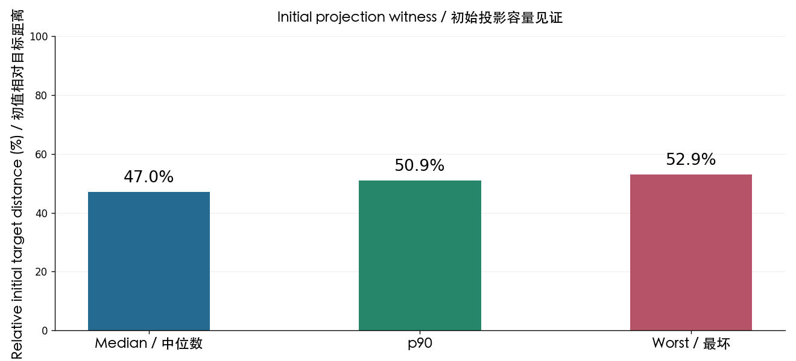
当前观测方向的容量见证未通过
新候选不使用训练记忆库：从当前多相机观测与报告几何生成有符号方向，以跨相机汇总耦合，再精确伴随提升和原样细化。全部方向先封存，之后才读取有限经典目标做最佳初始场投影。本轮没有训练预测器。
12项独立核验通过；同一99个三帧训练哨兵上，基础精度33/33分层通过，四指标同精度仍为0/99。场、全梯度、内部梯度、观测单项分别匹配1/6/17/0个样本；初值到有限目标的相对误差中位数41.1%、p90为45.3%。
预先固定的普通CGLS、PCGLS和dual-ridge同预算对照也都未通过严格门。观测一致性是共同缺口，并非唯一缺口；目标可见见证对PCGLS没有稳定优势。未来预测的98A+98AT预算不是本轮oracle实际成本：基构建、目标读取、几何准备与核验全部另计，没有实测提速或内存优势。
按结果前规则关闭这个固定投影后细化见证，不继续拟合系数。最佳初始投影不等于全部细化路径的最优系数，不能据此否定整个表示、学习初始化或BOST。只检验已有5/7/9相机和三帧哨兵；没有完整时序、封存测试、外部泛化或真实BOST结论，此前有限学习信号保留。私有数据、源码、协议、权重不发布。
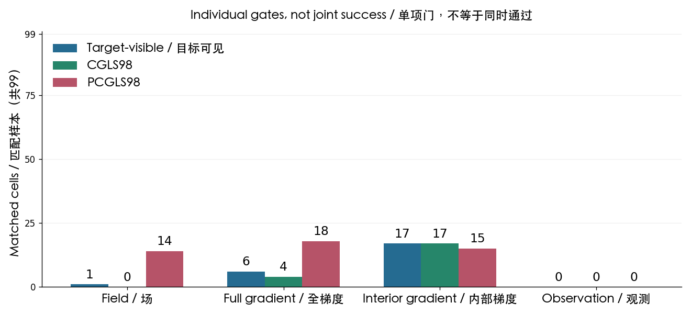
非局部算子初值：全局传播未带来增益
只用当前观测和报告几何，在三维世界坐标中传播有符号反投影信息；两个共享系数只在其他轨迹上拟合，再做精确伴随提升与原样CGLS细化。同一11条已打开轨迹、99个三帧训练哨兵、5/7/9相机；整条留出轨迹不进入拟合，但这不是完整时序验证。
正式与独立复算110/110核验通过。候选与去掉场值依赖的几何积分对照均通过33/33基础分层，但四指标同精度均为0/99。候选在99/99单元的四项误差都比同预算普通CGLS35更差；场、全梯度、内部梯度、观测误差的中位比依次高0.34%、0.35%、0.24%、3.36%。
场值依赖候选相对几何积分对照也在99/99单元四项均更差。每个新方法在线账为35A+35AT，密集积分不免费；没有速度或内存优势。原昂贵完整因子的经典99/99达标证据保留，原参考与所有对照逐位继承，不使用失效计时的新参考。
关闭这条固定的非局部积分与两系数配方，不调核、损失或细化深度挽救；这不否定全部算子学习或BOST。此前有限学习收益保留，学习初值、完整序列、总成本和外部验证主目标仍未完成。共享规范CSR输入与编排已披露，独立数学实现与物理重放通过；私有数据、源码、协议和参数不发布。
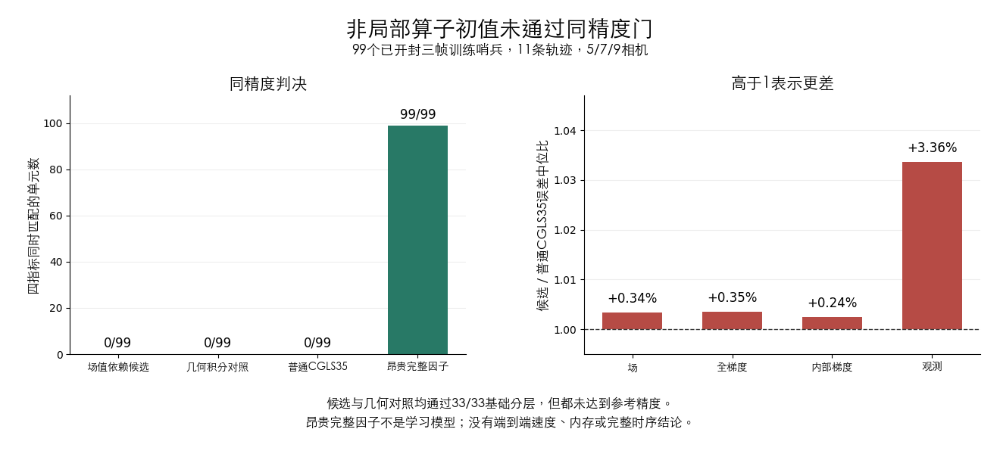
成本门未定：九相机参考身份不一致
六次新进程计时已封存，但参考复现门未过，不能判速度或内存胜负。两套只读审计一致定位到九相机CGLS128参考端点；候选三次运行均复现原结果，每种方法的三次结果也各自逐位一致。原经典99/99达标证据保持有效。
新参考在观测行重排后计算，旧参考来自继承端点；尚未证明排序是唯一原因。审计没有新求解、训练、真值读取或A/AT调用，49/49核验一致；不重跑计时、不放宽门、不改判成功。学习初值、完整序列、实际提速与外部验证主目标仍未完成。
层次压缩容量失败：小存储没有保住精度
一个固定纯几何空间层次表示近似完整逆因子，再接原样零初值PCGLS34。生成表示不读CFD真值、当前观测或轨迹标签，不训练模型；仍是11条已打开轨迹的99个三帧训练哨兵、5/7/9相机，不是完整序列或真实BOST。
独立复算通过；严格四指标匹配0/99、基础分层0/33。所有99个样本四项误差都高于普通CGLS35，场/观测误差比中位数约10.83/20.18。上一轮完整分解仍保持99/99、33/33，不能把本次失败解释为整个方向无解。
密集逆因子约1071MiB，压缩因子25.4MiB，但精度失败。在线34A+34AT另加68次层次扫描，完整矩阵、逆因子与压缩建立仍非免费；不能称同精度速度或内存优势，也不是学习算法突破。
关闭这一固定压缩配方，不加rank、改叶块或上大网络挽救；它不否定全部层次方法。后续学习不能假设这个表示已有容量，必须先提出物理上不同、能接精确提升的新假设。主目标仍未完成。
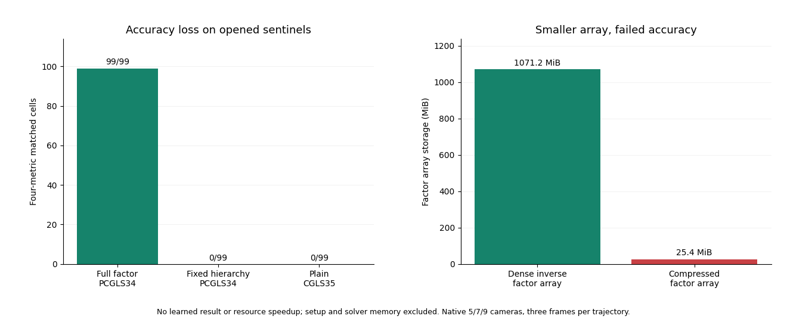
少调用达标已有强经典见证，学习目标仍未完成
只由报告几何构造完整正规矩阵固定分解，接原样零初值PCGLS34；候选生成不读CFD真值或教师，不拟合参数。同一11条已打开轨迹的99个三帧训练哨兵、5/7/9相机，不是完整序列、任意位姿或真实BOST。
独立24/24项检查通过；四指标在冻结1%参考误差容差内匹配99/99、基础绝对分层33/33。候选场/物理图像最大相对差4.38e-11/8.55e-11，指标最大差6.49e-11。普通CGLS35、Jacobi-PCGLS35和此前学习记忆库仍严格0/99；新经典对照在全部99个样本的四项误差均不差于它们。
在线34A+34AT，低于有限参考的128A+128AT，但另有34次因子求解；每档几何仅LU因子就约415–731MiB，正规矩阵、几何建立、分解和存储成本均不免费。当前没有fresh wall/RSS，不能把调用减少称为端到端速度或内存优势，也不是学习算法突破。
这个见证排除了当前样本上“少调用一定无法达标”的解释，但不证明唯一失败根因或普遍可解。下一问题是便宜的观测/几何学习能否捕获有用的全局耦合，并在完整成本上与强经典对照公平比较。旧失败配方不重开，不授权完整序列、外部开封或神经训练；论文主目标仍未完成。
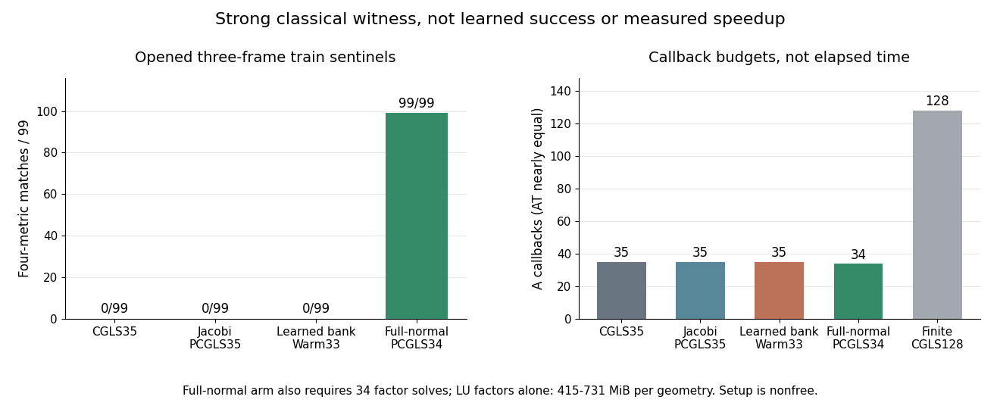
查清小收益：相似度加权有作用，但不是全部来源
这是已关闭全观测模型的单变量消融，不是新算法成功：保留原训练库、已拟合系数、几何转移、观测幅值匹配和原样CGLS33，只把当前样本的相似度权重换成常数；没有重训或新标签。11个整轨迹排除外折，评价仍为99个已开封三帧训练哨兵、5/7/9相机，不是完整序列。
15/15项独立核验通过。去掉相似度权重后，99/99样本四项最终误差都更差；去权重/原模型的场、全梯度、内域梯度、观测误差比中位数为1.00596917/1.00634695/1.00378669/1.03263228。相似度加权在这个冻结模型上有一致的增量作用，不只是训练损失下降。
但去权重仍保留原模型97个相对普通CGLS改善样本中的88个；对普通CGLS四项不更差88/99、都更差2/99，场/观测误差比中位数0.97439764/0.86224311。控制仍用观测做幅值匹配和CGLS，不能叫完全不读观测，也不是最优重新拟合全局先验的测试；这些差额不是总误差的因果份额。
原模型与消融都保持基础精度33/33、严格同精度0/99；原配方不重开。单次35A+34AT，训练库、存储与几何不免费；每种实现新增审计6,039A+3,465AT，乱序核验另计1,155A+1,122AT。这不是有效加速，未测fresh wall/RSS，没有完整序列、任意位姿泛化、真实BOST或论文突破。下一机制需同时审视训练得到的物理方向与观测条件选择，不扩大旧库或调参数救援。
补充的零求解方向诊断独立11/11通过：用最优有符号标量缩放去权重初值，仍无法重现99/99个条件初值；相对方向残余最小/中位/最大为2.39%/8.63%/16.75%。这说明本次条件选择确实改变三维初值方向，不只是幅值；没有新增A/AT、训练或CFD读取。不证明所有幅值优化后的CGLS路径都无效，也不改变原0/99严格门。
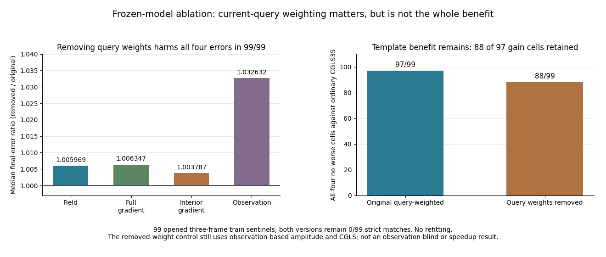
跨相机几何修正：收益太小，仍未省计算
这次实际拟合两个共享参数，用当前观测的带符号反投影与报告的相机方向构造跨相机张量特征，再经精确提升和原样CGLS重建。同规模去几何版本是固定对照，旧小网络不重训。11个整轨迹留出外折只用其他轨迹拟合；评价仍是99个已开封三帧训练哨兵、5/7/9相机，不是完整序列。
20/20项独立核验通过，逐样本指标最大差1.06e-14。参考与候选基础精度均通过33/33分层，但候选和去几何对照的严格四指标同精度都是0/99。这是固定方案的科学失败，不是程序没跑完，也不意味着基础重建失败。
相对同规模去几何对照，四项不更差63/99、四项都更差31/99；场/观测误差比中位数0.99988454/0.99866742，收益很小且不普遍。相对同档预算普通CGLS，99/99样本四项都更差，场/观测误差比中位数1.00244883/1.02102673。对PCGLS四项不更差仅2/99，不能只挑较好的场误差中位数。
5/7/9相机候选查询分别为94A+98AT、92A+98AT、90A+98AT；普通CGLS使用94/92/90次A与同数AT。每种实现新增22次小拟合，审计另耗21,681A+18,909AT，缓存、标签与张量计算不免费。这不是有效加速，未测fresh wall/RSS。关闭此固定配方，不调阶数、ridge或迭代深度挽救；不否定全部几何学习，没有完整时序、外部泛化、真实BOST或论文成功结论。
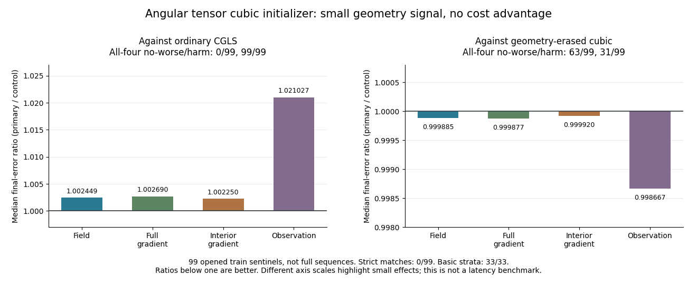
让模型直接对最终重建负责，仍未省下计算
这次52个共享参数不只让初值更像目标，而是穿过原样CGLS直接训练最终场。当前观测和几何是唯一输入，留出目标与真值不参与训练。两套实现分别完成11个整轨迹留出外折；评价仍是99个已开封三帧训练哨兵，不是完整序列。
独立25/25检查通过，基础精度33/33分层通过，但严格四指标同精度0/99。模型通常略好于自身不学习的初值：98/99个样本四项不更差，场/观测中位改善仅0.00138%/0.01106%。普通CGLS却在全部99个样本四项都更好；PCGLS比较2个不更差、43个均更差、54个混合。
所以不是完全没学到，而是没有抵消自身成本。5/7/9相机的逻辑预算94/92/90次A、98次AT，比普通CGLS多伴随调用；每种实现训练另耗2,914,560A+2,914,560AT，缓存、标签与模型也另计。不是有效加速或实测时间/内存成果。
固定配方关闭，不靠加大网络、改损失或多跑步数挽救。原工程失效保留，唯一键核验不重训不改门，修复不是创新。不同模型不是严格损失位置消融；不否定全部学习初值，已有有限收益保留。没有完整时序、外部泛化或真实BOST成功，主目标仍未完成。
最终训练诊断：不能只怪跨轨迹泛化
保持模型不变，新增990次折内终点评估，复用99个留出终点；不是新增990个样本。17/17独立核验通过。相对无学习初值的有限目标联合损失，折内改善0.05106%-0.05822%、中位0.05425%；留出改善0.02196%-0.08849%、中位0.06106%。这是归一化平方场/观测距离，不是CFD场误差或之前0.00138%的指标。
11折训练和留出收益都小，没有“大训练收益、留出崩塌”。这缩小了问题，但尚未区分容量与优化，不否定全部学习初值，不授权增加训练。旧0/99保持不变；每种实现新增92,103A+90,123AT、几何另计，没有新拟合、教师构建或CFD读取。仍是三帧训练哨兵，不是有效加速或完整序列，没有真实BOST或论文成功结论。
冻结迭代步长也不能救回初值
在同一99个已开封三帧训练哨兵上，不重训，只固定无修正重启对照的步长，传递已有学习修正。两种实现分别计算扰动传递与完整重放，26/26项独立检查通过。它是事后归因，不是完整序列或新的预测器；冻结步长后的重放不是该学习初值上的CGLS。
冻结步长后，33/99样本四项均恶化，66/99为混合效应，没有四项同时被自适应步长从好变坏的样本。观测误差在99/99样本高于无修正重启，中位数/p90/最坏比为1.05787/28.02494/70.25871；原样自适应CGLS在99/99样本减轻这部分观测恶化，但仍未胜过无修正重启。不能只怪步长反馈。
反事实重放基础门32/33、严格匹配0/99，不是有效加速或替代算法；误差比与向量放大不是唯一因果机制。原配方保持关闭，不调损失或深度，不否定全部学习初值。首次调用账漏记评分投影的失败完整保留，正式数组逐位复用，只修记账与独立评分元数据；每种实现审计成本14652A+12870AT，缓存与训练另计。没有完整时序、实测资源、外部或真实BOST结论。
初值训练指标与最终收益出现脱节
补充同预算“精确提升＋只重启”对照，27/27项独立检查通过。没有重训，原模型、状态和失败判决不改。这是已有99个三帧训练哨兵上的事后归因，不是完整序列或新的预测算法；训练评估重复使用折内样本。
既有学习修正的初值联合损失在训练/留出评估中分别改善约0.17127%/0.17084%，但最终四项误差在99/99样本均高于只重启对照。只重启本身也在99/99样本四项均不如同成本冷CGLS。误差差额分解中的重启/提升比例中位数约77%–81%，未过结果前“近乎全部解释”门，判为混合效应，不能只怪重启成本或泛化崩溃。
这些比例不是总误差能量份额或唯一因果机制；初值有限目标距离也不等于CFD真值精度。原多尺度配方保持关闭，不改损失或深度救援。96A+96AT不是有效加速，已有缓存、标签和训练并不免费。下一候选须核对最终物理收益和无修正对照；不否定全部学习初值，没有完整时序、实测提速、外部或真实BOST结论。
多尺度局部初值仍未超过同成本经典算法
从当前观测和几何生成求解状态，再提取多尺度局部特征，拟合八个跨相机共享参数，精确伴随提升后接原样CGLS。整条留出轨迹不参与拟合；有限经典目标仅用于折内训练，CFD真值只在预测后否决。评价仍是99个三帧训练哨兵，不是完整序列或标准神经算子比较。
33/33项独立检查通过，指标最大差5.62e-12。基础精度33/33分层通过，严格四指标同精度0/99。同成本普通CGLS及少一次伴随的BP，在99/99样本的四项误差上均更好；场和观测误差比中位数约1.0062和1.0501。非线性对线性版本四项不更差63/99、均更差35/99，仍无稳定经典算法优势。
关闭这一固定多尺度配方，不调层数、阈值、损失或深度。96A+96AT不是有效加速，缓存、标签、训练与核验另计。失败原因尚未唯一定位，不否定全部非线性先验或BOST；此前有限学习收益保留，没有完整序列、实测提速、外部或真实BOST结论。
保边缘学习初值没有抵消自身成本
从当前反投影生成非二次TV方向，只用折内训练CFD场拟合一个跨相机共享参数，再精确伴随提升和原样CGLS；不是旧记忆库或二次几何权重调参。整条留出轨迹不参与拟合，仍只评价99个三帧训练哨兵，不是完整序列或神经算子。
30/30项独立核验通过，指标最大差1.86e-14。基础精度33/33分层通过，严格四指标同精度仍0/99。同调用预算普通CGLS及少一次伴随的BP对照，在全部99个样本的四项误差上均更好。学习虽在91/99个样本上不劣于固定TV，却没有超过便宜经典对照。
关闭这个固定单步TV混合，不调平滑、线搜索、损失或深度。99A+99AT是失败预算，不是有效加速；缓存、训练与核验成本另计。样本键格式失效的原记录保留，接续逐位复用正式初值，不重训、不改门；修复不是科研突破。此前有限学习收益保留，不否定全部物理先验或BOST，没有完整时序、实测提速、外部或真实BOST结论。
观测残差最优，不等于场重建最优
限定的理论边界：精确算术下，只用当前观测与同一个未预条件正常算子的幂构造全局标量多项式初值，再接原样CGLS，不能把观测残差压得比常规完整动作计账下的同预算冷CGLS更低。即使系数由学习模型预测，逐查询搜索空间仍被包含。这是经典Krylov最优性的预算推论，不是首创算法。
两种独立精确算术实现对36个预注册有理数例子一致；有限例子核验实现，普遍结论来自代数推导，不能用测试数代替证明。单独冻结的代数反例还确认：同一空间内仍能以极小残差代价改善场误差。因此，观测残差下界不等于物理先验无效，也不否定四指标容差目标。反例使用可见代数真值，不是预测器或冻结细化路径的成功。
本轮是研究筛选依据，没有新CFD评分、训练、同精度少调用或实测提速。有限精度、场与梯度优劣、相机/空间耦合、外部方向、变预条件和非线性物理均不能由这个限定结论统一否定。旧方案关闭状态不变，整个学习加速目标仍未完成。
射线图的非线性项没有稳定优势
新方案实际拟合三个共享参数，用当前测量射线的几何耦合与观测正负关系生成初值，整条留出轨迹不参与拟合，再精确伴随提升并接原样CGLS。26/26项独立检查通过，逐样本指标最大差2.98e-14。
99个已开封三帧训练哨兵基础精度33/33分层通过，但严格四指标同精度0/99。相对同预算普通CGLS，四项均不更差28/99、四项均更差50/99；相对去掉非线性项的两参数图对照，分别40/99与54/99。当前非线性项没有稳定优势，关闭这一固定配方。
原独立程序在特征动作、标签、拟合或评分前因稀疏辅助函数改变存储行顺序而停止；失败保留。单独冻结的工程接续恢复未被改动的求解输入，并逐位复用独立程序自己的封存图，没有改算法、阈值或正式结果。共享冻结物理矩阵、独立图运算与物理重放的范围已披露；修复不是科研突破。
99A+99AT是失败候选的查询预算，不是同精度节省；图缓存、标签、排序和训练不免费。不扩大图度数、模型或细化深度；这不否定全部射线图、学习初值或BOST。只覆盖已有5/7/9相机与三帧哨兵，没有完整序列、实测提速、外部或真实BOST结论，此前有限学习信号保留。
六参数学习初值的表示短板已定位
这次实际拟合新的共享响应，只读取当前观测和报告几何，整条留出轨迹不参与拟合，再精确伴随提升并接原样CGLS。20/20项独立检查通过，99个已开封三帧训练哨兵基础精度33/33，但严格四指标同精度0/99；同预算普通CGLS在全部99个样本四项误差均更好。关闭这个固定方案。
关键不是失败计数：封存结果独立归因发现，128个几何模式对有限CGLS99到CGLS128修正的场/观测能量中位数只覆盖0.00077%/1.01%，最大差2.12e-15。不是全部CFD误差，也不是全部细化路径的最优初值；当前表示缺少大部分剩余修正，不能只靠增加参数挽救，更不代表所有学习初值或BOST不可能。
失败候选的99A+99AT预算不是同精度节省。缓存、标签、排序、密集作用和训练不免费；没有完整序列、实测资源、外部或真实BOST结论。先前小幅学习信号保留，主目标未完成。
全观测学习有局部收益 仍未达到同精度加速
新增封存结果归因已双实现核验：学习修正的场能量中，与PCGLS同一条输出修正方向平行的比例中位数约0.87%。这说明已有收益不只是重复该方向，但不证明与整个PCGLS搜索空间独立。九相机33个哨兵中，只有14个学习端点在观测空间更接近有限参考解，距离相对PCGLS的中位数为1.0122；距参考解不是CFD真值误差。
这次归因没有新训练、求解或CFD读取；连续量独立最大差约3.23e-14，离散计数一致。下一步应研究场收益与观测一致性能否兼容，不能据此扩大模型或重启旧核配方。原严格同精度0/99判决不变；不是组合算法、完整时序、速度或论文成功。
后续训练库投影归因已独立封存，11项检查通过：读取留出的有限经典目标做最佳初始场投影时，相对误差中位数仍约38.3%、p90约45.2%；接相同细化后，严格同精度仍为0/99。仅用观测求系数也为0/99，两者基础精度33/33。不能只用系数没学准解释当前失败；但最佳初始场投影不等于全部细化路径的最优解，不能宣称整个训练库或学习方向不可能。它是目标可见的事后诊断，不是部署预测或新加速成果。
新的非局部学习初值只读当前多相机观测与报告几何，再精确伴随提升并接原样CGLS。整条留出轨迹不参与训练；同一99个已开封三帧哨兵上，14项独立核验全通过，基础精度33/33分层通过，但严格四指标同精度仍为0/99。关闭这一个固定记忆核配方，不事后调整模型或细化预算。
双实现对封存结果的事后描述一致：近似同算子调用预算下，97/99个样本的四项误差均优于普通CGLS，场误差中位数约低3.2%，但两个样本的场或内部梯度略有伤害。对更强PCGLS，四项同时改善65/99、同时变差10/99。大型记忆库、标签构造与训练不免费；这不是同精度少调用或实测速率收益。
该结果保留有用但有限的学习信号，不证明完整观测已经足够，也不证明全部学习初始化或BOST不可能。仅测试已有5/7/9相机子集与输入乱序；三帧哨兵不等于完整时序验证，没有任意新位姿、封存测试、外部泛化、真实BOST或论文成功结论。私有数组、源码、协议、记忆库与权重不发布。
二维拟合改善 不等于三维精度改善
后续固定方向容量审计也已独立封存：即使允许真值可见的最优标量选择，99个已开封哨兵均无法沿这条固定方向达到原场精度门；不是只因观测与场的最优系数冲突。观测单项控制同样未过四指标同精度。因此不训练该方向的标量选择器。此为事后容量诊断，不是否定全部学习初始化、BOST或论文可能性；真正的学习加速仍未证明。
同一已开封公开训练哨兵上的固定AMG经典对照已完成独立核验，不训练参数，也不改变物理数据项。四指标同精度失败，基础分层仅部分通过；相比同算子调用预算的普通CGLS，全部观测误差更低，但多数三维场误差更高。关闭这个固定配方，不事后修改层级、平滑或迭代深度。
两套实现分别重建层级与细化，以共同冻结矩阵求解，再由独立重建物理算子重放全部终点。原时限中断和元数据错误保留，完整前缀复用，余下状态按原合同接续，误差门未放宽。残差更低不能替代场、全梯度、内部梯度与观测四项门；具体根因尚未证明。缓存正规矩阵作用、几何准备和中断额外成本都不免费。只有三帧哨兵证据，没有学习加速、实测时间内存优势、完整序列、外部或真实BOST结论，也不证明整个方向不可能。
固定频谱预条件改善局部误差 仍未达到同精度
单独冻结的经典对照只用网格与已知几何，不训练参数，也不改物理算子或最小二乘目标。正式快速变换与独立直接余弦实现已封存：基础精度通过，严格四指标同精度失败。关闭这个固定半阶配方，不事后修改指数、尺度、边界或迭代预算。
相同算子调用预算下，它在不少样本上比普通CGLS和几何Jacobi更好，但并非逐样本稳定优势。观测一致性是所有样本共同未过的指标，不是唯一瓶颈；场与梯度汇总改善不能替代四项逐样本门。预条件作用、几何缓存和旧学习训练都不免费。后续学习比较必须面对这个更强的经典竞争；这里只是已开封训练哨兵证据，没有学习加速、完整时序、资源优势、外部或真实BOST结论。
前置观测选择学到部分结构 仍未达到同精度
新小模型只读当前观测与已知几何，先做共享非线性选择，再精确跨相机传播、伴随提升并接原样CGLS。整轨迹留出训练与独立第二实现已封存：基础精度通过，但四指标同精度失败；同价后置学习对照也未通过。关闭这个固定结构与配方，不改宽度、目标损失或细化深度救援。
事后描述显示初值更接近目标、部分便宜初值的误差改善，但近预算普通CGLS仍更好。学到部分结构不等于最终同精度成本优势；对照参数量不同，不是隔离顺序影响的因果证明。数值求解使用共同冻结矩阵，终点由独立重建物理算子重放，全部状态先于真值评分封存。训练、教师、缓存和诊断不免费。只有已开封训练哨兵证据，没有完整时序、封存测试、资源优势、外部泛化或真实BOST结论，也不证明整个方向不可能。
信息审计仍不确定 已定位输入舍入敏感性
受控信息审计仍是不确定结论。另行冻结的交叉输入对照确认：两套有限步教师求解代码在完全相同输入下得到一致的场、系数和投影；但九相机受控样本的极小输入舍入差异会放大，超过原教师数值一致性门。原审计、输入与失败记录保留，没有放宽容差、修改扰动或替换目标。
这是已开封训练观测上的数值归因，不是局部特征不足或三维重建不可能的证明，也不是新的学习算法。交叉状态先封存，独立汇总再核验；新投影检查仅使用共同冻结的离散矩阵，不冒充新物理验证。未读取新的真值或封存测试，旧基本精度与同精度失败结论不变。没有授权改造旧模型、扩训练或租GPU，也没有少调用、时间内存优势、外部泛化或真实BOST结论。
相机块初值：局部改善，不是同精度加速
完整相机双分量的几何伪逆初值，只读取当前观测和已知几何，再接精确伴随提升与原样 CGLS。独立复算确认，细化后在每个已检验训练哨兵的四项误差上均优于 BP 和逐行归一化初值；但仍未达到高预算有限步基线的四指标同等精度。基础精度通过与同精度加速不是一回事；关闭这个固定机制，不调整截断、分块、阻尼或步数救援。
这是经典块投影对照，不是学习模型或新发明。两套实现分别构造几何因子，以共同冻结的矩阵求解，并由独立重建的物理算子重放最终场；完整状态先于真值评分封存。合成病态矩阵的有限步细化闭包失败保留，结果前诊断解释了浮点敏感性，实际样本仍强制通过原数值与物理门。几何分解、缓存和块作用并非免费。没有完整序列、未见相机、噪声标定鲁棒性、真实 BOST 或时间内存优势，也不证明整个 C 路线不可能。
边界补偿初值：未带来同精度优势
有限积分盒的导数补偿与固定软滤波，只读取当前观测和已知几何，再接精确伴随提升与原样 CGLS。独立复算确认这批已开封训练哨兵达到基础精度，但四指标同精度比较失败；便宜 BP 初值和普通 CGLS 对照在每个已检验样本的四项误差上都更好。关闭这个固定机制，不修改滤波参数、边界规则或预算救援。
候选是经典对照，不是学习模型或精确无旋约束。光滑边界恒等式不适用于截断插值分支，单独解析核对解释了差异，原失败记录保留。两套实现以共同冻结的矩阵求解，最终场由独立重建的物理算子重放，完整状态先于真值评分封存。新增导数作用与几何准备并非免费；没有完整序列、外部泛化、真实 BOST 或时间内存优势，也不证明整个 C 路线不可能。
张量初值对照：更简单的有限步基线
从张量场表示提取的静态三维逐样本对照已完成。只用当前观测优化初值，再接原样 CGLS；部分空间误差改善，但未守住四指标精度等价门，优化与细化总调用还高于普通 CGLS。普通 CGLS 在更低预算下匹配了这批哨兵的固定有限步目标，成为更简单的应用对照。关闭这个固定张量方案，不改模型规模、优化步数或精度门来救援。
两套优化实现使用共同冻结的离散矩阵输入，并由独立重建的物理算子重放最终场；不是求解全过程都独立生成算子系数。完整状态先于真值评分封存，坐标接口修复没有重训。此结果不是完整 TDBOST 复现、跨轨迹学习、驻点参考、完整序列或真实 BOST，也没有调用、时间或内存优势。旧参考失败与先前表示证据保留，不证明整个 C 路线不可能。
私有三维输入：先核对观测支持
内部独立第二实现确认：旧粗探测器存在零列节点；由已知坐标和几何定义的原生密采样完整视野配置消除了零列。相同采样密度的旧视野对照也解除支持下界否决，不能把改善归功于独特算法或学习模型。
这只是必要的观测支持检查，不是四指标重建成功、合格参考解、真实 BOST 或提速。更密的探测器改变每次 A/A^T 的成本；物理语义与单位仍待确认。私有原始场、几何、数值数组和图表不公开。
同固定场的独立重放确认：三维场差别大时，二维观测仍可接近。真值可见的固定场对中，TV 偏好正确场，平方梯度偏好错误场；只是先验排序，不是 TV 重建成功。经典 TV 有限步精度改善，但收敛证书未过。后开封的原样 CGLS 细化独立改善二维拟合并保住三维精度；只验证细化增量的伴随提升，不证明 TV 初值满足 exact lift。两类参考仍不可判定，不授权训练或提速。
新增独立条件性见证：在该原生算子和预注册有限对偶范数下，纯伴随场族不能达到冻结场门。这不是无界对偶、一般 PCGLS 或 PoolFire 的不可能性；不能靠更大网络绕过这个有界表示限制。
2026-10-05｜算得一致，参考仍未稳定
后续严格整轨迹留出的学习哨兵检验未通过：固定小模型加原样 CGLS 细化守住了基本绝对精度门，但未达到固定有限步对照的场、全梯度、内部梯度和观测精度等价门。同输入线性与便宜经典对照也未守住该精度等价门；不是因为某个便宜对照已完全通过才否决学习模型。两套实现分别训练、提升、物理重放并得到一致判决。关闭这个固定模型，不扩完整序列或加大网络。先前表示容量通过与旧优化参考失败均不改写；没有同精度调用、时间或内存收益，也不证明整个方向不可能。
后续主线表示门通过：两套独立实现重建方向和系数，并用新鲜 A^T lift 复现全部固定有限步目标。它只证明这些哨兵目标的表示可行；系数读取目标且准备成本昂贵，没有训练或调用节省。旧参考失败不变，完整轨迹预测与公平总成本仍待检验。
另做同输入归因：全部 99 个既有哨兵的状态和观测保持相同，两套物理实现通过 12/12 独立检查。两种 K128 状态的完整空间驻点门均为 0/99；它区分了算子作用一致性与有限步参考问题，不救回旧失败判决，也不否定所有有限预算重建。
新增独立对照：普通投影 GCV 与旧规则共用同一方向和预算，在 99 个已开封训练样本上完成 14/14 检查。两规则的绝对门均为 36/36，稳定性均为 0/36；普通投影规则虽增强过滤，全部 99 个样本的场误差却更大。本次不扩大到完整序列，不构成算法突破。
后续独立参数核对：23,331 条已开封记录里，最大 k−有效自由度仅 3.58e-5。这次显式正则化很弱；它为参考不稳定提供机制线索，但未证明唯一根因，也未改变 0/36 的原判决。
重正交 Hybrid-GCV 参考审查完成：3,333 个样本、36 个分层，独立检查 13/13 通过。128 步绝对误差门为 36/36，但 64 到 128 步四指标稳定性为 0/36，固定参考尝试关闭。没有同精度调用节省、资源优势或真实 BOST 结论。
这次补齐的是已完成独立运行的汇总，不是重新训练或重跑求解器。只恢复内存中的元数据关联，原结果与冻结标准不变；新增 0A+0A^T。
本轮只能拒绝这套固定参考，不能由此认定整个 C 路线失败。达到宽泛绝对门不等于四指标精度匹配。
下方为保留的历史记录；各项结论只适用于其原数据与算子合同。
2026-09-30｜V307：全分辨率边界置零并非可忽略
在 11 条已开封训练轨迹的 55 帧准备态全分辨率场上，先减内部均值再置零最外一层，会移除 L2 范数中位数 19.08%、p90 25.65%。V304.2 的“无影响”只适用于已预先置零的低分辨率代理。两者不矛盾；物理边界含义仍未知。独立复算 220 个浮点指标与 110 个整数检查，最大差 4.99e-12。
这是数值表示敏感性，不是边界条件确认、BOS 重建、算法突破或调用/资源收益；不改变 v284 严格成本判决。验证、测试和外部数据未访问。
配套 V306 在同一批 55 帧比较一阶/二阶端点差分：全域梯度差 p50/p90 为 6.59%/9.06%，严格内部差异为零，外壳内为 23.91%/26.42%。独立复算 715 个浮点指标与 110 个整数检查全通过；仍不能判定物理上应使用哪种模板。
2026-09-30｜V303.1：新增训练工况没有修复支持缺口
独立复算覆盖 11 条已开封开发轨迹、8,140 个样本和 67,155 条有效相机观测行。整体支持率 86.89%，新增工况 16.13%，预注册 90% 相机与扰动分层门未通过；25 项完整性检查通过。该结果关闭本次 post-open 工况扩展，不是新留出泛化、重建、速度或算法突破，也不授权训练预测器。
2026-09-30｜组分折射率的条件性敏感性诊断
一条已开封训练轨迹的 101 帧中，按暂定的四组分质量分数与 N2 补足假设，混合折射率相对常数折射率造成约 0.131% 的折射率场 p90 差、3.502% 的梯度 p90 差和 2.424% 的三视角投影 p90 差；独立重建一致。公开字段定义、导出版本、组分闭合与波长尚待确认，所以这只改变了前向物理核验的优先级，不是算法或重建成果，也未触碰 validation/test。
2026-09-30｜v302：共享分量混合不是主要错配解释
观测量边界：V299–V302 使用的是弧度制偏折角，没有像素位移映射；V282 是另一条带虚拟光学假设的像素模拟，并非实测 BOS。
在同一批五条已开封轨迹的 25 行上做整轨迹留一：对角分量缩放在 5/5 折降低观测差异；完整 2×2 分量映射只在 1/5 折略优于对角 control，另外 4/5 折略差，最大差约 3.5e-5。形式/独立最大差为 2.66e-15。
这是已开封真值归因，不是实际标定、可部署修正、泛化、调用节省、wall/RSS、真实 BOST 或算法突破；不改变 v284 严格整轨迹成本失败。
这个页面未来怎么用
每天不需要写长文，只要留下“问题、尝试、结果、下一步”。毕业论文最怕到最后想不起实验为什么这么做；这个日志就是给未来的你留下证据链。
2026-09-30｜v301：视角间残差差异温和，不支持单相机解释
在相同五条已开封 PoolFire 轨迹的 25 个样本、9 个视角上，逐视角描述连续观测与冻结离散投影的残差。相机残差比变异系数约 5.5%；各视角 p50、p90、worst 的最大/中位比约 1.134、1.196、1.255。正式与独立摘要最大差 1.17e-14，输入未变。差异温和，没有单一视角明显支配。
边界：这是已开封数据上的事后描述性归因，不拟合逐相机增益，不是物理根因证明、新 forward、重建结果、部署规则或算法突破；matched-accuracy 调用节省、wall/RSS、外部泛化与真实 BOST 结论均未建立，v284 严格成本失败不变。
2026-09-30｜v300：单一比例不足以解释前向不匹配
在五条已开封 PoolFire 轨迹的 25 行上，对连续观测与冻结离散真值投影做预先规定的闭式比例归因。合并分量的最佳比例 1.194445 仅把归一化残差从 0.255085 降到 0.199042；分量比例 1.060664 与 1.262022 分别校正后仍约 0.183。
formal 与独立复算最大差 2.31e-14，输入未变。它表明统一增益不是充分解释，但不能区分密度-折射率映射、分量定义、空间离散或插值；使用已开封真值的事后诊断不是物理校准、因果证据、真实 BOST 或算法突破。v284 的整轨迹严格成本失败继续有效。
2026-09-30｜v299：离散一致观测下，深层误差分歧反转
在相同五条已开封 PoolFire 轨迹的 25 行上，只把观测换为冻结离散算子的 y=A x_truth。总预算 17A+17A^T 时，learned 相对 Zero 的场/全梯度/内部梯度/观测误差中位差为 -0.004108/-0.008820/-0.003524/-0.003397；分别在 20/25、20/25、19/25、20/25 行更低。v298 原连续观测下，场和全梯度中位差则为 +0.005983/+0.014646。
独立复算最大场差 5.44e-15。它支持“观测生成与离散求解器不一致可能参与分歧”，但反事实观测由已开封真值构造，不是因果证明、新预测、整轨迹泛化、真实 BOST 或省调用/速度/RSS 结果；v284 严格成本失败不变。
2026-09-30｜v298：更贴合二维观测，不一定更接近三维真值
在五条已开封 PoolFire 轨迹的 25 行上，真值场经离散算子投影与连续合成观测的不匹配 p50/p90 为 0.2393/0.2909。总预算 2A+2A^T 时，learned warm 对 Zero 的场、全梯度、内部梯度和观测残差四项真值误差均在 25/25 行更低；到预算 17A+17A^T，learned warm 的场/全梯度中位误差略高（0.2433/0.4452 对 0.2369/0.4293），观测残差略低（0.1245 对 0.1254）。这提示当前不匹配下二维拟合与三维误差可能分离，但不是因果证明。
formal 与独立分解最大差 3.82e-14，输入树保持不变。该事后真值归因不构成新预测、前瞻停止规则、完整轨迹泛化、调用节省、wall/RSS 收益或真实 BOST，也不推翻 v284 的严格成本失败。
2026-09-30｜v296：浅层检查点有事后同精度信号，深层优势消退
对五条已开封 PoolFire 轨迹的 25 个样本行，比较 Zero、归一化 BP 与冻结 learned 初值的离散 CGLS 检查点。四指标（场、全梯度、内部梯度、观测残差）均需逐项不劣。目标预算 3 时，warm 在预算 2 匹配 Zero/BP 的行数为 24/25、23/25；目标预算 5 时，warm 在预算 3 匹配为 4/25、7/25，且对 Zero 的四个匹配仅来自同一条轨迹。预算 9 与 17 没有更早匹配。
形式与独立复算最大数值差为 2.44×10⁻¹⁵。范围严格限于已开封行、离散预算和真值评分；连续观测与离散求解器存在算子不匹配。它不是前瞻性停止规则、整轨迹泛化、真实 BOST、速度/RSS 收益或算法突破。
2026-09-29｜共同停止规则审裁：精度通过，稳定调用优势失败
对象说明：复用 v284 已封存的 learned initial field 和投影图像；v3 以该初值重新运行共同 AMG-PCGLS 求解/停止合同，并生成求解器细化后的终端场；v4 只做独立复算与审裁，不另产预测。没有新模型权重或新学习初值。问题是该同一初值能否在精度匹配时稳定减少 A 与 A^T 调用？本次只审计五条已开封 PoolFire 轨迹的 505 帧。
独立验证的 8 项检查全部通过，505/505 帧通过场、全梯度、内部梯度、观测四项精度门。严格双算子调用胜出分别为 Zero-AMG 490/505、归一化 BP 485/505、dual-ridge 464/505。只有 1/5 条轨迹逐帧胜过全部对照；最弱一折对三个对照的胜数为 88/101、85/101、73/101。正式判决：FAIL_LEARNED_INITIALIZER_NO_ROBUST_CALL_ADVANTAGE。
边界与决定：这是已开封数据上的验证性审裁；没有本次 fresh wall-time/RSS，且训练、推理、几何准备成本未计入。不支持端到端加速、泛化、真实 BOST 或算法突破。关闭当前固定学习方案的稳定省调用主张，不追加调参挽救。
2026-09-27｜v285：同族 H₂-air 复验的观测一致性失败
这次不是新训练，也没有改 SARC-K3-M4。我们把冻结方法用于同一 H₂-air 数据族中此前未开封的配置，54 帧全部未通过联合精度门。独立程序把 216 个曲线前向输出重新算了一遍，和正式结果最大差约 2.5e-16，封存预测没有被改动。
拆开指标后看到一个明确取舍：相对 Direct-K4，场和梯度误差逐帧更低，但观测误差逐帧更高。它告诉我们这次主要卡在测量一致性，而不是可以立刻靠改一个混合系数解决；不过这是结果后的描述，不是因果证明，也不能拿这 54 帧继续调参。
重要边界：这是同一 H₂-air 数据族的开封后配置复验，不是新的独立数据族，也不是真实 BOST；没有测调用成本、墙钟时间或内存。固定配方关闭，不做后验混合、不跑资源测试。
2026-09-27｜v284完整轨迹留一：精度通过，严格成本失败
问题：观测/几何条件化的暖启动能否在最终物理精度不变时，稳定减少精确算子调用？做法：从原始初始化开始，五折完整轨迹留一；训练只用各折训练轨迹，部署预测不读留出真值，后续保持原 AMG-PCGLS 与停止证书。
结果：505/505 留出帧对通过场、全梯度、内部梯度和观测精度；严格胜过全部对照的只有 453/505。其余 52 帧全部由同 AMG 对照造成，其中 42 帧历史 dual-ridge 已不更贵。完整轨迹严格通过数为 94/101、97/101、101/101、67/101、94/101，仅 1/5 全程通过。独立验证 26/26 项通过，退出后摘要复算一致。
未预注册的累计调用审计补充：对 dual-ridge，每条留出轨迹的总 A 与 A^T 调用都更少；每条几何路径 505 帧合计各少 4,083 次（7.15% / 7.21%）。这不替代逐帧主门、不改 FAIL 判决，也没有墙钟时间/RSS证据。
事后等分帧序显示，第 4 折早/中/晚分别有 14/34、11/34、9/33 个成本反例；其余四折总数为 7、4、0、7。失败并非只在轨迹末段出现；这是未预注册的描述，不能解释原因或更改判决。
判断与下一步：这是有效的成本负结果，当前固定配方没有稳定轨迹级优势，停止追加训练与调参。同批次五组配对进程复测显示，缓存推理时 learned 墙钟中位数比认证 AMG-PCGLS 低约 11.9%，但峰值 RSS 高约 34.1%；训练和 AMG 建层/证书准备均未计入，也未重评精度。因此只报告这条已开封工作负载的进程级资源取舍，不称全流程加速或资源优势；正式严格成本判决仍为 453/505 帧、1/5 轨迹通过，失败不变。
每日日志格式
| 字段 | 写法 | 例子 |
|---|---|---|
| 今天目标 | 一句话，不超过 30 字。 | 跑通 2D BOS forward projection toy。 |
| 读了什么 | 论文/教材章节/代码链接，写页码或小节。 | NeRIF arXiv Section 3；Raffel BOS review 的 displacement 部分。 |
| 卡住什么 | 写具体错误或概念，不写“我不会”。 | 不知道 deflection angle 和 image displacement 的比例如何标定。 |
| 怎么解决 | 写一个可复用结论或命令/公式/图。 | 先用 pinhole 小角度近似做 toy，真实比例留给标定参数。 |
| 产物 | 脚本、图、表格、笔记、问题清单。 | demo_m0/figures/projection_error_noise_scan.png |
| 明天动作 | 只写 1-3 个可以执行的下一步。 | 加入 SART baseline；问师兄 mask 是否进入 loss。 |
周报结构
每周固定四张图
- 数据或 phantom 图。
- 重构结果图。
- 误差/指标曲线。
- 失败样本或不确定性图。
每周固定四个问题
- 这一周最确定的结论是什么？
- 最不确定的假设是什么？
- 哪个问题需要问何远哲？
- 下周最小可交付是什么？
长期学习轨迹
| 月份 | 主任务 | 日志重点 |
|---|---|---|
| 第 1 月 | 流体/光学/BOST/反问题基础和 M0-M1 demo。 | 把概念误区写清楚，尤其是折射率、密度、位移、投影和重构的关系。 |
| 第 2 月 | NeRIF 简化版、baseline、view/noise 扫描。 | 记录每个 loss、encoding、正则项为什么加，以及失败时图像是什么样。 |
| 第 3 月 | 真实数据接口或 PIV/4D 子模块选择。 | 记录和师兄确认过的边界、数据字段、评价指标和公开限制。 |
| 第 4-9 月 | 毕业论文主实验、消融、图表和写作。 | 每次实验都留下 config、commit、图和一句结论，避免最后补账。 |
公开与私有分区
可以公开写进日志
- 公开论文的读书心得。
- 自己实现的合成 demo、代码和图。
- 基础概念问题和解决过程。
- 不含组内数据的实验参数扫描。
只放本地私有日志
- 学校 VPN 下载的受限 PDF 内容页码截图。
- 组内未公开实验图、标定、代码和数据字段。
- 师兄明确说不要公开的结论。
- 任何账号、密码、内部链接或权限信息。